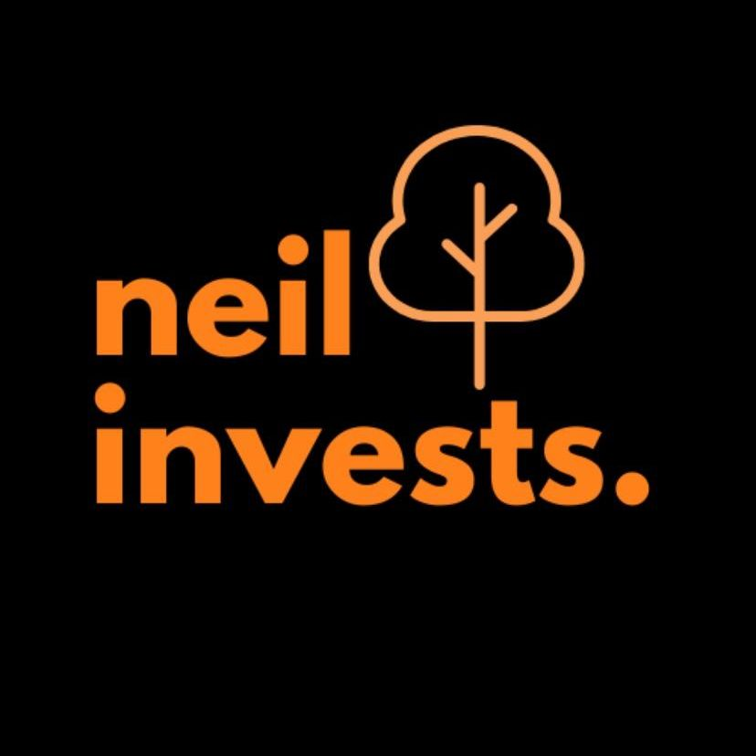

What Emmie's quant background teaches everyday index investors
← Blog Investing
Emmie spent eleven years in quantitative finance, the corner of the industry where PhDs build models to outsmart markets, and she emerged with the insider's conclusion that almost nobody states on camera: almost nobody beats the index, including, most of the time, the quants. She now translates that institutional humility into everyday financial literacy for 108,000 TikTok followers. You do not need her CV to use her lessons. In a real sense, her CV is the argument for ignoring everyone with a CV.
The tension at the heart of this story is the tension at the heart of the industry itself. Quantitative finance exists to find edge, small statistical advantages that compound into fortunes at scale. The joke, which Emmie is unusually willing to tell on herself, is that the edge available to a person with a phone and a monthly salary is not a model at all. It is humility, automation and time. Three creators who never worked in finance arrived at the same conclusion from the opposite direction, and their agreement across styles and account sizes is what makes this story worth reading.
Start with Emmie's own money, because she films the unglamorous part. In a video watched nearly 7,000 times, she takes the audience pension shopping with her, comparing InvestEngine, AJ Bell and Interactive Investor as the new home for her company pension balance. Her non negotiables are contributions from her limited company, a wide selection of ETFs, FCA regulation and low cost. The quant shows in the method: define the criteria first, screen at least ten providers, shortlist three.
emmieedit
"I've decided to open a SIP and move my existing company pension balance into it. So let's go through the different providers together and find the best one on the market."
Her verdict on cost compresses the whole quant ethos into a sentence. Of the DIY portfolio option she says: "If you build a DIY portfolio, the fees are basically zero so you only need to pay the etfs charges." Note what she is optimising. Not returns, not predictions, not timing. Fees, the one variable the investor controls completely. She leans toward AJ Bell for its huge fund universe, reading the trade offs aloud instead of hiding them.
Her second investing series goes further into quant territory. In the opening episode of a run on thematic ETFs, she explains that ordinary investors can buy whole baskets of companies tied to cybersecurity, robotics or clean energy, no stock picking required. She brings receipts from LGIM's 2025 thematic ETF report: the overlap by weight between the MSCI World Index and thematic funds was just 3 percent for cybersecurity, 5 percent for robotics and 3 percent for healthcare technology. The only exception was AI at 15 percent, which she notes makes sense because giants like Nvidia and Alphabet already dominate the world index. Then comes the warning that separates the educator from the hype merchant: a trending theme is not automatically a good investment, and thematic charges of up to 0.8 percent a year demand a reason to pay them.
"You don't need to find the next N video to invest in innovation. There are funds that let you invest in an entire basket of companies connected to a particular theme."
If Emmie brings the method, 
His portfolio philosophy is the quant's null hypothesis stated in plain English: "I don't want to be putting a big proportion of my portfolio into individual businesses. I just wanna match the all world. If I do that, I actually will beat most investors, cause most investors underperform the all world by trying to beat it." Matching the average sounds modest until you learn that most professionals fail to do it, at which point it sounds like victory, because it is.
His most useful video is a long list of hard bits and easy bits, and its honesty is bracing. The hard bits include starting before you feel ready and investing when the market is falling, plus the one nobody can outsource: "Watching your portfolio drop 10, 20, 30% or more. It will happen in your investing life. Staying consistent when everyone else is panicking." The easy bits, he insists, include the parts beginners fear most, like opening the account, automating deposits and picking one cheap diversified fund. On timing he is absolute: "You can't time the market. Don't care how good you think you are." And on maintenance he is funnier than any fund manager: "Once the system is set up, allow it to do its thing." Doing nothing, on purpose, is the strategy.
 Sophie Blank is the receipts. She started with zero investing knowledge and £100 in July 2018, and she has published her net worth progression almost every year since. Her journey video drew over 2,500 views, and her most watched video reached 42,837 plays with 698 likes.
Sophie Blank is the receipts. She started with zero investing knowledge and £100 in July 2018, and she has published her net worth progression almost every year since. Her journey video drew over 2,500 views, and her most watched video reached 42,837 plays with 698 likes.
itssophieblank
"I made my first investment of £100 in the summer of 2018. In 2020 is when I really started properly tracking my net worth. And my total net worth was £10,500."
The middle years read like a controlled experiment in doing the boring things. She moved from charity work into tech consulting, survived a sabbatical year that flattened the curve, then got serious in 2023: "2023 is when things started kicking off. I started taking saving and investing, as well as paying off my student loan pretty seriously." Clearing the student loan in full proved to be the hinge. By 2025 she was earning six figures, and by 2026 she reported: "Right now I have £223,000, which is crazy." Salary, saving, index funds, patience.
Her monthly ritual is mechanical buying, which is what quants call removing emotion from the loop. In her own written words: "every month, I buy exactly 3 funds. 2 ETFs and 1 ETC. my aim is to diversify my investments while keeping a focus on growth." The lineup is a Vanguard All World accumulator for core growth, a Vanguard Emerging Markets fund for the growth her core holding underweights, and a physical gold ETC as ballast. Her motto, printed across her captions, could serve as the whole article's thesis: "rich girls don't panick and pick stocks, they buy the market and move on." On gold she is explicit about the logic: "I hold this one myself to hedge against the stock market going down because when stocks go down, historically gold goes up." That is portfolio construction, learned on the job, stated better than many advisers manage.
Ollie Invests runs the diversified version, and he brings the spreadsheet. Seventy percent of his money goes into a FTSE world distributing fund, twenty percent into a global growth fund, five percent into physical gold and five percent into physical silver as an inflation hedge. One global tracker buys exposure to thousands of companies across dozens of countries, diversification at a scale no individual portfolio, and few active funds, can match. A quant would approve of the structure. A beginner need only approve of the simplicity.
ollieinvests
"So the common advice always to use etfs, diversify your investments and think long term. That way there's no guesswork needed cause you've diversified your risk and not leave yourself open to one stock portfolios."
He is honest that the portfolio is not large yet, and the honesty is the point. He invests for a horizon of ten, twenty, thirty years, putting money in every month, and he shows the compounding arithmetic on screen: keep investing £50 a week and a £55,000 lifetime contribution could potentially grow to £270,000.
He also supplies this story's cautionary tale, because he covers single stocks as a reporter rather than a tipster. When Nike fell 10 percent in a week and stood down roughly half over the year, he laid out the facts for 2,063 viewers: "Nike stock has just dropped 10% in a week and it's now down 50% over the past year." The company had beaten profit estimates yet missed on revenue and cut guidance far below analyst hopes: "The company is now dropped in value from 280 billion 2021 to roughly 57 billion now." This is exactly the single stock risk the others diversify away.
Put the four voices side by side and the contrasts are as instructive as the chorus. On tilts and extras, Emmie and Neil Invests visibly differ in emphasis. Emmie, the professional, is comfortable adding a thematic satellite to a global core, provided the overlap data justifies it and the fee earns its place. Neil is the purist: match the all world, refuse the cleverness, let the contributions do the work. Sophie Blank lands between them in practice, holding a core world fund plus deliberate satellites in emerging markets and gold, while Ollie Invests adds small physical metal hedges of his own. Nobody here holds individual stocks as strategy. Ollie's Nike coverage shows exactly why.
On everything structural, they agree completely, which is the real story. Costs are the enemy Emmie screens for, the drag Neil checks before investing and the reason Sophie picks accumulators that reinvest without friction. Automation is the mechanism all four rely on: Emmie's pension criteria, Neil's standing orders, Sophie's three fund ritual, Ollie's monthly purchases. Time horizon is measured in decades by every one of them. And the deepest agreement is Neil's core claim, confirmed by Sophie's spreadsheet: no factor model, no smart beta, no tactical overlay beats the brute force of saving more. The input matters more than the optimisation. Eleven years of quantitative finance, distilled to a direct debit.
Neil Invests
"The biggest thing that's gonna impact your portfolio performance for a number of years is your contributions into it, not the returns."
The synthesis is almost offensively simple, which is why it keeps needing to be said by people with credentials. Open a Stocks and Shares ISA. Pick one cheap global fund, the way Neil, Sophie and Ollie all did, and check the platform fee the way Emmie taught you. Automate a monthly payment you can sustain, raise it when your income rises, and then allow the system to do its thing while you get on with earning. If you want a satellite later, a thematic fund or a gold ETC with a written reason attached, the four voices above show how to hold one without letting it become the portfolio.
So the takeaway for the next morning you feel the urge to pick stocks is a short one. Check whether your direct debit is still running, whether your money is landing in a diversified fund inside your ISA, and whether your fees are the lowest you can find. If the answer is yes three times, you are already doing what eleven years in quantitative finance taught Emmie and what £223,000 taught Sophie. Ignore the noise. Keep buying the world.
Nothing on this page constitutes financial advice. Figures quoted are self-described by each creator in their own TikTok videos, linked so you can check the source yourself.
Net worth figures are self-described by each creator in their own TikTok content and have not been independently verified. Nothing on this site constitutes financial advice. © 2026 SaveShare.io